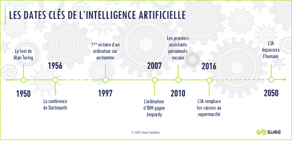

Les débuts de l'IA
L'histoire de l'intelligence artificielle remonte aux années 1950, lorsque les premiers ordinateurs ont été conçus. Des chercheurs ont alors commencé à se poser la question suivante : est-il possible de créer une machine capable de réfléchir et d'apprendre comme un être humain ?
Les grandes étapes de l'IA
Depuis les années 1950, l'IA a connu de nombreuses avancées, comme l'invention du premier programme informatique capable de jouer aux échecs en 1956, ou encore la victoire d'un ordinateur contre un champion du monde d'échecs en 1997. Aujourd'hui, l'IA est omniprésente dans notre vie quotidienne, que ce soit dans les assistants vocaux, les voitures autonomes ou encore les systèmes de recommandation sur les sites de e-commerce.